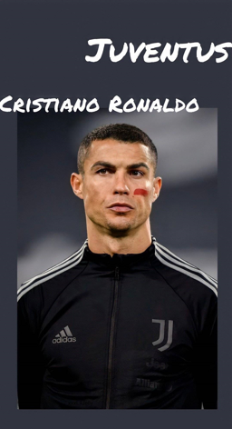

姓名：克里斯蒂亚诺·罗纳尔多
昵称：C罗 小小罗 总裁
国籍：葡萄牙
俱乐部：意大利尤文图斯
他并不是足球的天才，可是他用刻苦的训练，不断的努力，使自己成为这个时代最好的球员。
业界对他的评价:
- C罗是这个时代最特殊的球员。他通过不断地努力训练，射门技术、左右脚技术、头球能力和弹跳力不断精进。 他对于足球的热爱和渴望是不可思议的，每堂训练课，他都充满了向往和期待，每天C罗都在变得更好，他对于足球是真的热爱。（亚历克斯·弗格森爵士评）
- C罗是一位伟大的球员，他实力很强，每年都在超越自己，变得更好。（里奥·梅西评）
- C罗的成功是刻苦训练的结果，他不是那种自然的天才。（兹拉坦·伊布拉西莫维奇评）